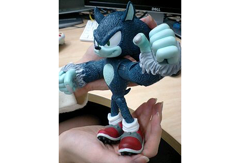

『大ニュース！ ソニック映画化♪』
2008年12月19日
こんにちは、マツバラです。はりきって2日連続更新です！
寒い日が続いていますが、
元気にお過ごしでしょうか！
こんにちは、ヨシノです。
風邪には気をつけてくださいね。
SWAディレクターの橋本さんも
先週、インフルエンザで倒れてました。
本当、気をつけましょう……。
さて、今日は皆さまに
発表したいことがあります。
ああ、「アレ」のことね！
ヨシノ、早く早く♪
はーい。
じゃあ、発表します。
えーっと、あのソニックが――
ちょ、ちょっと！！
もう少しこう、楽しく盛り上がれないの！？
どいて！ 私がやるから！
はい、皆さん、長らくお待たせしました！
超・大ニュースの発表です☆
あのソニックが――
な・な・なんと！！
短編映画になっちゃいましたー！！
なっちゃいましたー。
『NIGHT OF THE WEREHOG ～ソニック＆チップ 恐怖の館～』
全国のシネコンで、明日、１２月２０日から１月９日まで上映されます！
されます。
ＴＪＯＹ系のシネコン全国９箇所で！
新宿バルト９は全スクリーン上映、それ以外は一部スクリーンにて！
現在上映されている映画の前に、
同時上映という形で上映されるんですよ！
すごいでしょう！！
すごいでしょー。
ソニックとウェアホッグが映画館で見られるなんて、夢のよう……
くわしくはこちらのサイトを見てください。
とっても面白い＆カワイイ＆カッコイイ＆ホラーな作品になってます！
もちろん、私たちも劇場に見に行きます。
この子を連れて♪

↑マツバラとヨシノのアイドル、ウェアホッグ人形
もしかしたら劇場で皆さんとお会いできるかもしれませんね♪
新宿バルト9かあ……
都会にお出かけなんて久しぶりだね！
私たち、ずっと会社に閉じこもって
ゲーム作ってたもんね……
わあ、ドキドキしてきた！
どうしよう、美容院行かなきゃ！
……。
開発で寝不足だからお肌も荒れてるし！
そうだ、パック買ってこよう♪
……マツバラ。
サプリも飲まなきゃ！
服はどれがいいと思う？
……え、ヨシノ、何か言った？
そんなに慌てなくても大丈夫だよ。
えっ！
そ、そうかな？
もう何をやっても手遅れだから。
！！！！
日時: 2008年12月19日 17:00 | パーマリンク


 ソニックを愛する、元気な『SWA』2年目プランナー。
ソニックを愛する、元気な『SWA』2年目プランナー。 マイペースな『SWA』2年目プランナー。
マイペースな『SWA』2年目プランナー。
 ご意見・ご要望はこちら
ご意見・ご要望はこちら RSS
RSS